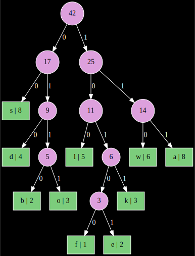

We continue our study of binary trees. We will explore some related data structures, as well as an interesting application. Specifically, you will learn about the following:
And on the C++ front, you’ll learn how to write template classes, like the ones you often use from the STL.
I would like you all to collaborate on these projects in small teams. Teams must have 3 – 4 people. As usual:
As discussed in lecture, we will store our heaps in an array. Think of a complete binary tree with the nodes labeled in ascending order as you read from top to bottom and left to right, and with the root labeled 0. Recall that with this indexing system you can get the left child by multiplying by two and adding 1. There’s only one tricky point: we won’t re-arrange the data in the original array, but instead have another array of pointers into it which we use for the heap. The reasoning for this is explained in the hints section.
For the details of the Huffman code, refer to the lecture notes, and to wikipedia.
All the functions you have to write are labeled with TODO as usual. As always, the skeleton code should compile.
Run the test script test.sh and then diff the result with the output from my program (if you have vim, try vimdiff {,s}output to get a side by side diff). Note: for a given data set, the Huffman code is not unique. Your output not being identical to mine doesn’t mean that it’s incorrect. However, if the initial array fed into buildHeap is the same as mine, then most likely the resulting code will be the same. In my program, the initial array is sorted (ascending) by the symbol. (This will happen naturally if you make a frequency table from a map and iterate through it; see the hints section below.)
If you have graphviz, you can also take a look at the Huffman tree representing the code using the --svg option. For example, if you ran
echo aaasswwoaoslbbwoasaldkwdsdfelwkwlasdseaslk | ./main --svg /tmp/tree.svgthen /tmp/tree.svg would contain something like this:

Note that the leaf nodes have the symbol on the left and the frequency on the right, and that each internal node is labeled with the weight of the subtree.
Once you have the heap functions done, I would recommend a strategy like this for writing huffmanEncode:
map data structure from the STL.nodes parameter in huffmanEncode is for. This way, the caller can easily free the memory via delete [] nodes; rather than a more complicated traversal of the tree.Since our heap functions are all templates, a priori, we don’t know what datatypes they will store. One important consequence: we might not know how to compare the elements! After all, not every datatype (e.g., our node class) has an operator< prescribing an ordering. Hence, we include an additional template parameter which provides this functionality:
template <typename T, typename L>
void heapify(vector<T>& A, size_t i, L lt = less<T>()) {...}In plain English: L is going to be some datatype which provides a way to compare elements of type T. How does this all work?? Well, L just has to define an bool operator()(T,T) which implements something like “less than”. See the hnComp type in the skeleton code, which compares node pointers by weight. Anyhow, if you have a vector vector<hNode<T>*> V of node pointers, then you can turn that into a heap like this:
vector<hNode<T>*> V;
/* fill V... */
hnComp<T> hnc; /* defines how to compare node pointers */
buildHeap(V,hnc);Now that you have fancy template stuff that generates Huffman codes, make use of it. Write an application reads a description of a code and some data, and actually encodes / decodes that data. How well does it perform?
Just make sure your group is listed on Piazza before the deadline.